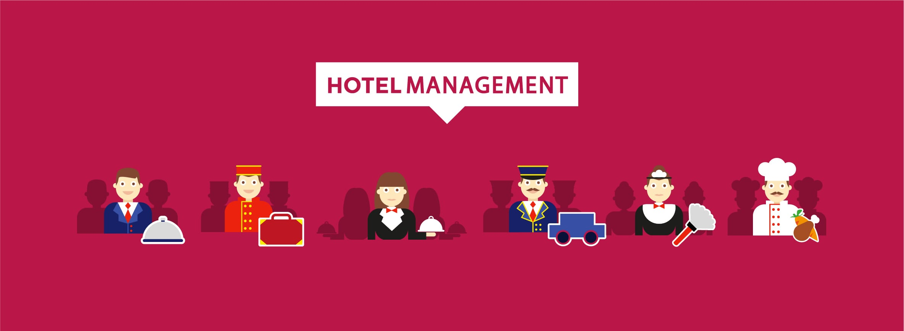

Hotels are amongst the most visible and important aspects of a country's infrastructure. Hotel industry is a closely linked one to the
tourism industry. A number of factors like promotion of tourism and rapid industrial progress have given a boost to hotel industry. The
recent liberalisation of trade and opening up of economy will further lead to revolutionary growth in this sector.
A hotel consists main departments such as Operations, Front office, Housekeeping, Food and Beverages, Accounting, Engineering/ Maintenance,
Sales and Security. Each department has a number of positions that one can opt for.
-General Operations
General manager, who is the main in charge, is the coordinator and administrator, responsible for staff management, financial control,
and provision of services, quality control and customer care.
-Front Office
It is the centre of all activities. Important functions of receiving the guests, making room reservations, handling
correspondence and preparing bills and keeping accounts of the guest services are handled at the front office. The department is headed
by Front office manager or Executive House-keeper who supervises and co-ordinates the work.
-House keeping
The work of keeping the hotel, the rooms, the bars, the restaurants etc. clean and making it presentable to the guests and ensuring
facilities and comfort to them is handled by this department.
-Food and Beverages Department
This department is the hub of the hotel industry and is responsible for all the food that is prepared and served in the hotel. The main
functions performed by the department arepresentation, preparation and service of food and beverages involving kitchen, bar and baker.
-Accounting Department
This department deals with both cash and credit transactions, i.e all the financial transactions like purchase of materials, offering of
services to the guests etc.
-Sales & Marketing
This department keeps in touch with travel agents and tour operators as well as other potential corporate clients in order to sell hotel
facilities. Advertising and Public Relations is also normally handled by this department.
Qualification requirements
- One can enter this field by direct entry or through hotel management institutes.Minimum qualification required to
go for a course in hotel management is 10+2 (any stream).
- Students looking at Hotel Management should have a good organizational background, excellent communication and interpersonal
skills, strong commitment and self-discipline. One must be an extrovert, co-operative, polite and respectful to the guests, have
patience to deal guest criticism even when you know you are right, willing to work hard even at odd hours and yet be cheerful.
Colleges to choose from
- Institute of Hotel Management (IHM’s) - Entrance exam NCHMCT.
- GGSIP University
- Indian Institute of Travel and Tourism Management (IITTM), Noida; Gwalior; Nellor; and Goa